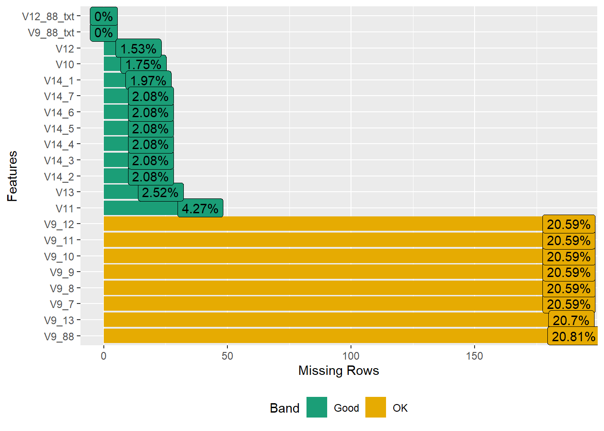
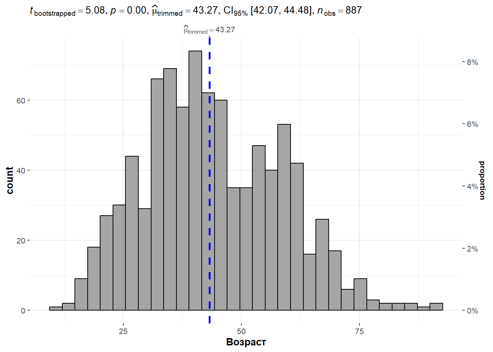
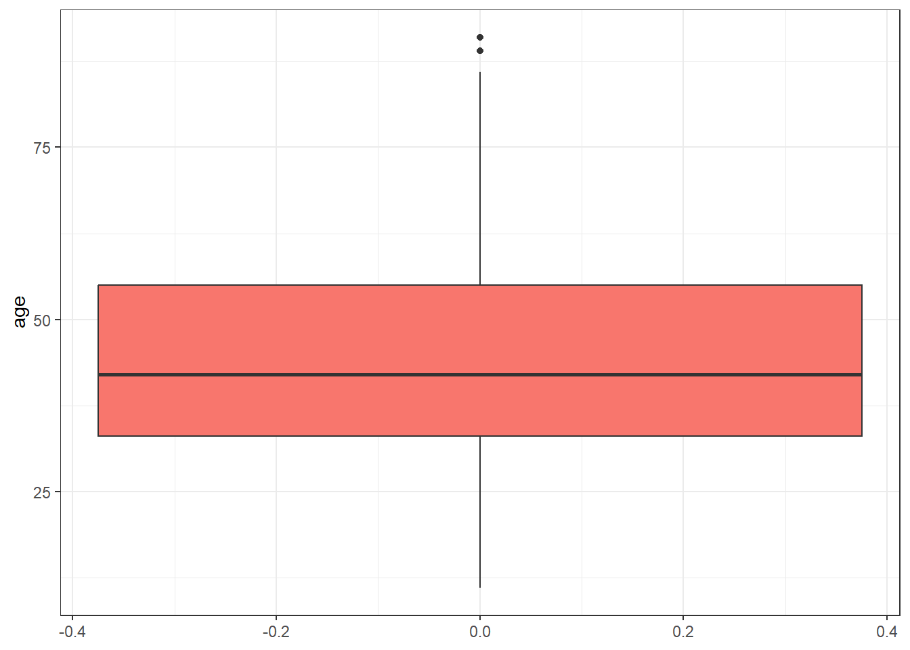
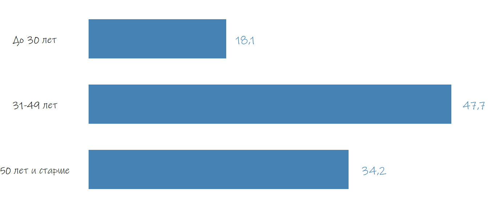
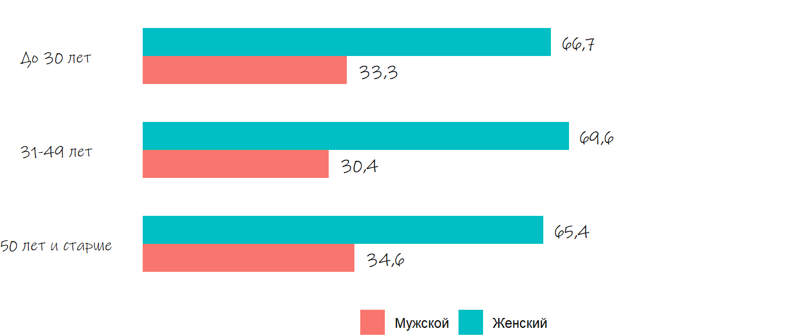
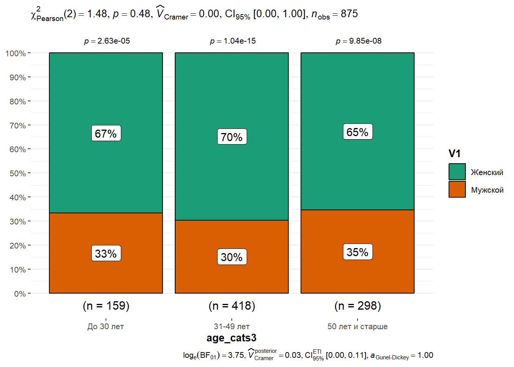
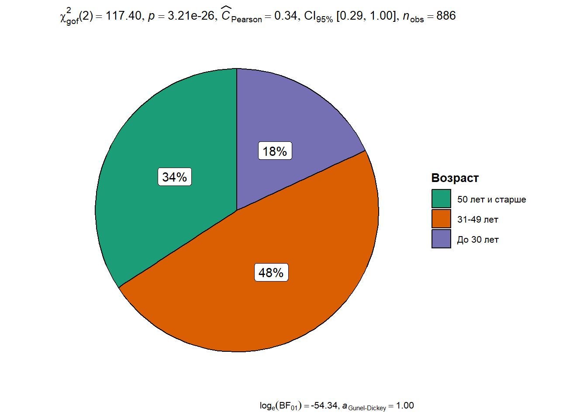
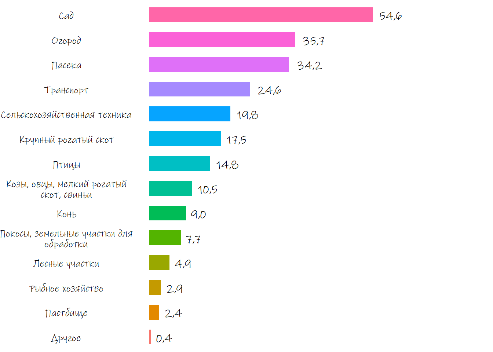

library(haven)
df<-read_sav("files/База_КлимРиск_2023.sav")9 Разведочный анализ данных в R
9.1 Для чего нам нужен разведочный анализ (Exploratory Data Analysis)
Разведочный анализ в общем смысле – это предварительный анализ данных с целью выявления наиболее общих зависимостей, закономерностей и тенденций, характера и свойств анализируемых данных, законов распределения анализируемых величин. Именно с разведочного анализа начинается любая обработка данных результатов научного исследования.

При этом, разведочный анализ - это не какой-то один статистический тест или метод. При разведочном анализе учитывается и сравнивается большое число признаков, а для поиска закономерностей или обоснования имеющихся различий используются самые разные процедуры и техники.
Термин «разведочный анализ» и набор техник, которые применяются для его проведения, был впервые введен и популяризирован американским математиком и статистиком из Принстонского университета Джоном Тьюки, написавшим в 1977 году книгу «Разведочный анализ данных» (Exploratory Data Analysis).
![]()
Этот термин кажется «сухим» и «занудным», однако практики, используемые в рамках разведочного анализа, не только являются крайне важными, но и весьма волнующими для исследователя. Не случайно, сам Дж. Тьюки сравнил EDA с работой детектива: каждый новое исследование данных представляет собой «мистическую историю», которую мы должны расследовать, вскрыть скрытые свойства и секретные характеристики наших данных.
Основными целями разведочного анализа являются:
- проникновение в данные и описание их во всей полноте;
- выявление основных структур (паттернов) и тенденций;
- идентификация взаимосвязей и корреляций между переменными
- выбор наиболее важных переменных;
- обнаружение отклонений и аномалий;
- проверка основных гипотез (предположений);
- разработка начальных моделей и подготовка данных для дальнейшего анализа.
Результаты разведочного анализа не используются напрямую для выработки управленческих решений, скорее они предоставляют помощь в разработке лучшей стратегии углубленного анализа, способствуют выдвижению новых гипотез, обосновывают возможности применения тех или иных математических методов и моделей. Без разведочного анализа дальнейший анализ данных, часто включающий разработку комплексных статистических моделей, будет производиться практически «вслепую».
Разведочный (эксплораторный, описательный) анализ данных по своему содержанию, целям и задачам противопоставлен подтверждающему анализу данных (Confirmatory Data Analysis), основанному на конкретных предположениях и уже имеющихся данных.
К основным методам разведочного анализа относятся анализ распределений, особенно с помощью методов визуального анализа (гистограмм, диаграмм рассеяния, ящичных диаграмм), тестирование гипотез о соответствии определенному виду распределения, методы группового и корреляционного анализа. Довольно часто к методам разведочного анализа также относят техники, позволяющие осуществить кластеризацию и снизить размерность данных, графически представить высоко-размерные данные, включающие множество переменных, в также предсказательные модели, такие как линейная регрессия, использующие данные и статистические показатели для предсказания целевых показателей. В рамках данного пособия такие методы будут рассмотрены в следующем разделе, посвященном многомерному анализу и возможностям статистического моделирования.
9.2 Анализ характеристик распределения количественной переменной
Мы начнем наше разведочное исследование с количественных переменных и затем перейдем к категориальным переменным, двумерному и корреляционному анализу.
Чтобы наши действия были ближе к «социологической жизни», мы будем использовать результаты исследования восприятия и оценки адаптивных стратегий населения в отношении климатических рисков в высокогорных районах Алтая.
Если Вы не сохранили данные с предыдущих занятий, скачайте их еще раз.
Скачать данные/
Прежде, чем мы начнем «препарировать» наши данные, давайте взглянем на них издалека, в целом. Для этой цели хорошо подойдут библиотеки так называемого автоматизированного разведочного анализа, позволяющие быстро подготовить отчеты сразу по всему массиву данных, представить остовные статистики и графики. В R существует по меньшей мере 10 таких библиотек, наиболее известными из которых являются: - summarytools - DataExplorer - visdat - funModeling - arsenal - dataMaid - dlookr
Подробный анализ данных библиотек в действии, их положительных и отрицательных сторон, можно найти в статье: Mateusz Staniak и Przemysław Biecek The Landscape of RPackages for Automated Exploratory Data Analysis.
Мы воспользуемся некоторыми функциями библиотеки DataExplorer. Для начала установим ее:
install.packages("DataExplorer")После установки, как всегда, загружаем библиотеку в текущую сессию и запускаем ее:
library(DataExplorer)Давайте проведем самый общий анализ по всей базе данных с помощью функции introduce(), которая выдаст нам самые общие сведения: количество строк и колонок (переменных), сколько из них являются дискретными и непрерывными, если такие переменные, в которых все данные пропущены, а также данные о количестве наблюдений и пропущенных значений.
introduce(df)| rows | 913 |
| columns | 202 |
| discrete_columns | 29 |
| continuous_columns | 173 |
| all_missing_columns | 0 |
| total_missing_values | 30851 |
| complete_rows | 0 |
| total_observations | 184426 |
| memory_usage | 1854656 |
Чтобы визуализировать данную таблицу, можно использовать функцию plot_intro(). На графике отображаются основные показатели набора данных - количество дискретных и непрерывных переменных, полных наблюдений и переменных с отстутствующими значениями.
Почему у нас так много пропусков и нет ни одной строки с полными данными? Все просто: ведь в ходе анализа учитываются абсолютно все переменные набора, включая дополнительные переменные «Другое», которые вполне могли остаться пустыми, если респондент не выбирал данный вариант ответа, а также переменные, предназначенные для определенных категорий респондентов, на которые по определению отвечали не все. Если бы мы отобрали меньшее количество переменных, которые нам нужны для конкретного анализа, результаты были бы совершенно иными. Кроме того, следует учитывать, что при подсчете «дискретных» и «непрерывных» переменных функция руководствуется результатам присвоения категорий данных в SPSS и их импорта в haven. Так что, если изначально тип переменной был задан неверно, то и результаты такого анализа, мягко скажем, не будут соответствовать действительности.
plot_intro(df)В доказательство вышеприведенного тезиса приведем график пропущенных значений по некоторым переменным. Можно легко заметить, что переменные образуют две группы - те, где количество пропусков не составляет выше 5% и переменные, где пропусков существенно больше (обозначены оранжевым цветом). Это ответы на вопрос 9, где спрашивалось о том, каким имуществом владели домохозяйства, проживающие в горных районах (сельхозтехника, сад, огород, пастбище, участки леса и пр.). Нет ничего удивительного в том, что более пятой части опрошенных не обладали ни одним из перечисленных вариантов, более того, часть из них, учитывая, что опрос проводился в зонах экстремального земледелия (приравненных к условиям Крайнего Севера), можно считать признаками высокого статуса и богатства (например, если у жителя есть в пользовании теплица и он может сам выращивать овощи).
plot_missing(df[,30:50])
9.2.1 Основные описательные характеристики
У нас не так много количественных данных, и одной из непрерывных переменных является возраст (age).
Самым простым способом анализа основных характеристик распределения является базовая функция summary(), предоставляющая семь ключевых статистик: минимум, максимум, среднее, медиану, 1-й и 3-й квартили, а также количество пропущенных значений:
summary(df$age) Min. 1st Qu. Median Mean 3rd Qu. Max. NA's
11 33 42 44 55 91 26 Более расширенный статистический анализ можно получить, обратившись к функции describe()из библиотеки psych (не забываем устанавливать новые библиотеки). Набор аргументов по умолчанию достаточно широк: здесь уже есть и стандартное отклонение, и усеченное среднее, и показатели асимметрии и эксцесса.
psych::describe(df$age)| X1 | |
|---|---|
| vars | 1.00 |
| n | 887.00 |
| mean | 44.00 |
| sd | 14.57 |
| median | 42.00 |
| trimmed | 43.57 |
| mad | 16.31 |
| min | 11.00 |
| max | 91.00 |
| range | 80.00 |
| skew | 0.32 |
| kurtosis | -0.39 |
| se | 0.49 |
Впрочем, каждый из них можно получить отдельно, с помощью базовых функций, например, стандартное отклонение:
sd(df$age, na.rm = T)[1] 14.57424Дисперсия:
var(df$age, na.rm = T)[1] 212.4086Асимметрия:
psych::skew(df$age, na.rm = T)[1] 0.31661139.2.2 Графические методы анализа распределения
Большую роль в анализе данных играет визуализация, и в случае анализа количественных переменных она просто незаменима. Часто именно график, без какого-либо статистического анализа, дает лучшее представление о том, что происходит с данными, тогда как статистические «точечные» оценки, такие как среднее или дисперсия, могут ввести в заблуждение.
Количественную переменную обычно графически представляют несколькими разными способами: - с помощью гистограмм; - с помощью квантильного графика; - с помощью ящичной диаграммы.
Самый быстрый и простой способ получения гистограммы - с помощью базовой функции hist():
hist(df$age, col="steelblue", xlab = "Возраст (лет)", main="Возраст опрошенных")Если мы хотим более «продвинутый» вариант гистограммы, можно обратиться к возможностям библиотеки ggstatsplots, основанной на философии создания визуальных материалов в рамках библиотеки ggplot2 и предназначенной для создания публикабельных визуализаций, сопровожденной результатами статистического анализа и возможностями проверки статистических гипотез. При несколько излишней сложности, это, пожалуй, лучшее, что есть сегодня в плане описательного анализа. Это не просто библиотека, создающая графики, это одновременно и способ визуализации, и способ проведения статистического анализа, включая представление регрессионных моделей и мета-анализ.
ggstatsplot::gghistostats(
data = df,
x = age,
xlab = "Возраст",
effsize.type = "d",
type = "parametric",
test.value = 40.4 #Протестируем гипотезу об отличии среднего возраста по выборке от среднего возраста россиян
)Результаты визуального анализа указывают на то, что наше среднее (44,0 года) довольно сильно отклоняется от общероссийских данных, что было протестировано с помощью одновыборочного t-критерия. Однако, довольно заметно, что у наших данных положительная асимметрия и довольно длинный «хвост» из больших значений. Попробуем робастный подход, где вместо среднего используется усеченное среднее (по умолчанию в настройках указывается значение «усечения» - 0.2), а для подсчета p-значения при сравнении средних используется метод [бутстрэпа](https://ru.wikipedia.org/wiki/%D0%91%D1%83%D1%82%D1%81%D1%82%D1%80%D1%8D%D0%BF_(%D1%81%D1%82%D0%B0%D1%82%D0%B8%D1%81%D1%82%D0%B8%D0%BA%D0%B0). Результаты неутешительные - различия по-прежнему значимые.
ggstatsplot::gghistostats(
data = df,
x = age,
xlab = "Возраст",
effsize.type = "d",
type = "robust",
test.value = 40.4 #Протестируем гипотезу об отличии среднего возраста по выборке от среднего возраста россиян
)
Еще один очень важный график: квантильный или Q-Q plot.
Архитектура этого графика проста: по оси x откладываются квантили для эмпирических данных, а по оси y - квантили распределения, с которыми мы их сравниваем (обычно - нормальное). Таким образом, Q-Q plot это диаграмма рассеяния, в которой два набора квантилей представлены друг напротив друга. Если оба они происходят из одного распределения, мы увидим точки, формирующие прямую.
Что такое квантиль?
Квантиль — это одна из точек, делящих функцию плотности распределения на участки, вероятность попадания в которые одинакова, то есть на участки одинаковой площади.

Квантильная функция — это функция, которая по значению вероятности P возвращает такое число (квантиль) q, что вероятность того, что случайная величина примет значение меньше q равняется P:
 В базовом R, чтобы создать такой график, нужно соединить две функции -
В базовом R, чтобы создать такой график, нужно соединить две функции - qqnorm () иqqline()`. Одна создает, собственно квантильный график, другая - референтную прямую, на которую можно ориентироваться при оценке полученных значений.
qqnorm(df$age, frame = FALSE)
qqline(df$age, col = "steelblue", lwd = 2)Как всегда, могут быть и другие варианты. На мой личный вкус один из лучших QQ-plot создается в библиотеке ggpubr, позволяющей добавить на график доверительные интервалы для квантилей, а также выбрать тему, применить трансформации к шкалам (“log2”, “log10”, “sqrt”), изменить другие настройки:
ggpubr::ggqqplot(df, x = "age", color = "steelblue")Еще одна форма графического представления количественных данных - ящичная диаграмма.
Анатомию данного графика лучше представить в визуальном виде (см. рисунок ниже). В центре графика - медиана, сам «ящик» формируется на основе межквартильного размаха (IQR), а «усы» ограничиваются либо минимальным и максимальным значениями, либо границами Q3+1,5*IQRи Q1-1,5*IQR, если в распределении имеются выбросы.
 Можно воспользоваться простой функцией `boxplot(), либо использовать более изощренные варианты.
Можно воспользоваться простой функцией `boxplot(), либо использовать более изощренные варианты.
boxplot(df$age, col="steelblue")library(ggplot2)
ggplot(df, aes(y=age, fill="red")) +
geom_boxplot()+
theme_bw()+
theme(legend.position="none")
9.2.3 Нахождение аномальных наблюдений
Уже на гистограмме и квантиль-квантильном графе хорошо видны все «огрехи» распределения, а ящичная диаграмма даже выносит особые наблюдения («статистические выбросы») за пределы основного графика.
Мы могли бы представить в виде диаграммы стандартизированные значения, и сразу понять, сколько и как много в нашей выборке наблюдений, превышающих допустимый предел (например, лежащих далее, чем 3 «сигмы» от нулевого значения):
df$z_age <- scale(df$age)
hist(df$z_age)Давайте посмотрим на описательные статистики:
summary(df$z_age) V1
Min. :-2.2644
1st Qu.:-0.7549
Median :-0.1374
Mean : 0.0000
3rd Qu.: 0.7546
Max. : 3.2247
NA's :26 Мы видим, что у нас нет маленьких значений за пределами «-3», но есть некоторые значения, превышающие «+3).
Мы можем посмотреть номера (строки) этих наблюдений:
which(df$z_age > 3.0)[1] 562 593 872Таких значений три - 562, 593, 872. Это серьезные долгожители:
df[c(562,593,872),]$age[1] 91 89 91
attr(,"label")
[1] "Возраст"
attr(,"format.spss")
[1] "F8.0"
attr(,"display_width")
[1] 10Вопрос о том, как выявлять аномальные значения и что с ними делать, не является тривиальным. Помимо графических методов, есть и специальные статистические методы, позволяющие вычленить наблюдения, содержащие нетипичные значения.
9.2.3.1 Фильтр Хэмпеля
Так, еще один метод, известный как фильтр Хэмпеля, рассматривает в качестве выбросов значения, попадающих в интервал (\(I\)), образуемый медианой плюс или минус три абсолютных отклонения от медианы (median absolute, MAD):
\[I = [median - 3 \cdot MAD; median + 3 \cdot MAD]\] где \(MAD\) определяется как:
\(MAD = median(|X_i - \tilde{X}|)\)
Давайте определим нижнюю и верхнюю границы фильтра и отберем наблюдения, которые не попадают в указанный диапазон:
lower_bound <- median(df$age, na.rm = T) - 3 * mad(df$age, na.rm=T, constant = 1)
lower_bound[1] 9upper_bound <- median(df$age, na.rm = T) + 3 * mad(df$age, na.rm=T, constant = 1)
upper_bound[1] 75outlier_ind <- which(df$age < lower_bound | df$age > upper_bound)
outlier_ind [1] 38 421 462 503 525 529 556 562 583 584 593 601 809 866 872Легко увидеть, что наблюдений гораздо больше, чем было выявлено с помощью z-значений, что указывает на то, что фильтр Хэмпеля является довольно консервативным подходом.
9.2.3.2 Статистические тесты для выявления аномалий
Кроме графических методов и механического отбора, нетипичные наблюдения можно выявлять и с помощью специальных тестов, например, таких как:
- Тест Груббса
- Тест Диксона
- Тест Роснера
Эти три статистических теста являются частью более формальных техник нахождения выбросов, так как они основаны на вычислении тестовой статистики, которая сопоставляется с табличными критическими значениями, основанными на объеме выборки и определяемого доверительного уровня).
9.2.3.2.1 Grubbs’s test
Тест Груббса позволяет сделать вывод о том, являются ли максимальное и минимальное значение выбросами.
\(H_0\): максимальное значение не является аномальным. \(H_1\): максимальное значение является аномальным.
Аналогичным образом формулируются гипотезы о минимальных значениях:
\(H_0\): минимальное значение не является аномальным. \(H_1\): минимальное значение является аномальным.
Как и для любого статистического теста, мы решаем, если p-значение меньше выбранного уровня значимости (чаще всего α=0,05) нулевая гипотеза отклоняется и мы делаем вывод, о том, что значения являются выбросами.
Этот тест не подходит для выборок, в которых содержится менее 6 наблюдений.
Чтобы выполнить тест Груббса в R, мы будем использовать функцию grubbs.test() из библиотеки {outliers}:
# install.packages("outliers")
library(outliers)
test <- grubbs.test(df$age, type=10)
test
Grubbs test for one outlier
data: df$age
G = 3.22471, U = 0.98825, p-value = 0.5426
alternative hypothesis: highest value 91 is an outlierТест «говорит» нам о том, что максимальное значение не является выбросом.
Проверьте, является ли выбросом минимальное значение. Для этого в настройках установите opposite = TRUE. Проверьте гипотезу о принадлежности к выбросам обоих - минимального и максимального значений. Поменяйте настройки на type=11.
9.2.3.2.2 Тест Диксона
Подобно тесту Груббса, тест Диксона используется для определения того, является ли минимальное или максимальное значение выбросом. Если у нас есть подозрение относительно других значений, мы должны тестировать их индивидуально.
Еще одно ограничение: этот тест хорошо работает только на маленьких выборках (n≤25).
Чтобы попробовать этот метод на наших данных, мы должны сократить нашу выборку и использовать соответствующую функцию из той же библиотеки:
subdat <- df[1:20, ]
test <- dixon.test(subdat$age)
test
Dixon test for outliers
data: subdat$age
Q = 0.31579, p-value = 0.5913
alternative hypothesis: lowest value 22 is an outlier9.2.3.2.3 Тест Роснера
К теста Роснера есть несколько преимуществ: - его можно использовать для вычленения нескольких выбросов за один раз - позволяет решать проблемы маскировки, когда один выброс, близкий по значению к другому выбросу, остается незамеченным - подходит для больших выборок. В R функцияrosnerTest()находится в библиотеке{EnvStats}`. Функция требует по меньшей мере двух аргументов: ссылки на данные и количество выбросов (по умолчанию 3).
Формула теста следующая: Наблюдаемые значения сортируются от меньшего к большему, далее определяется максимальное значение выбросов (не больше 10), и затем считается серия статистических тестов, путем последовательного удаления значений (высоких или низких), которые максимально удалены от среднего значения и пересчета стандартных значений по формуле:
\[\large R_{i+1} = \frac{|x^{(i)} - \bar x^{(i)}|}{s^{(i)}}\] Как только все статистики $ R_1…R_k$ посчитаны, начинается проверка гипотез путем сопоставления с критическими значениями для определенного уровня значимости.
Попробуем провести этот тест на наших данных:
#install.packages("EnvStats")
library(EnvStats)
test <- rosnerTest(df$age,
k = 3
)
test
Results of Outlier Test
-------------------------
Test Method: Rosner's Test for Outliers
Hypothesized Distribution: Normal
Data: df$age
Number NA/NaN/Inf's Removed: 26
Sample Size: 887
Test Statistics: R.1 = 3.224713
R.2 = 3.245654
R.3 = 3.128295
Test Statistic Parameter: k = 3
Alternative Hypothesis: Up to 3 observations are not
from the same Distribution.
Type I Error: 5%
Number of Outliers Detected: 0
i Mean.i SD.i Value Obs.Num R.i+1 lambda.i+1 Outlier
1 0 44.00225 14.57424 91 562 3.224713 4.010252 FALSE
2 1 43.94921 14.49655 91 872 3.245654 4.009971 FALSE
3 2 43.89605 14.41806 89 593 3.128295 4.009690 FALSEВидим, что результаты также схожи с теми, что мы получили в ходе анализа стандартизированных значений, что неудивительно, учитывая сходство статистических процедур.
9.2.4 Проверка на нормальность
Подчиняются ли анализируемые количественные переменные закону нормального распределения вероятностей? Очень многие статистические методы предполагают положительный ответ на этот вопрос, и поэтому проверка исследуемых переменных на нормальность распределения является важной составной частью разведочного анализа данных.
Как известно, кривая нормального распределения имеет красивый «колоколообразный вид» и описывается формулой функции плотности вероятности (probability density function, PDF):
\[f(x) = \frac{e^{-(x - \mu)^{2}/(2\sigma^{2}) }} {\sigma\sqrt{2\pi}}\]
Например, мы желаем проверить гипотезу о равенстве средних значений в двух независимых выборках. Для этой цели подходит критерий Стьюдента. Но применение критерия Стьюдента обосновано, только если данные подчиняются нормальному распределению. Поэтому перед применением критерия необходимо проверить гипотезу о нормальности исходных данных. Или проверка остатков линейной регрессии на нормальность — позволяет проверить, соответствует ли применяемая модель регрессии исходным данным.
Нормальное распределение естественным образом возникает практически везде, где речь идет об измерении с ошибками. Более того, в силу центральной предельной теоремы, распределение многих выборочных величин (например, выборочного среднего) при достаточно больших объемах выборки хорошо аппроксимируется нормальным распределением вне зависимости от того, какое распределение было у выборки исходно.
Проверяя условие нормальности распределения данных, необходимо, однако, хорошо представлять себе, в каких случаях его выполнение является критическим для применения конкретного статистического метода. Так, например, метод главных компонент (Principle Components Analysis, PCA) не требует, чтобы данные были распределены нормально. Линейная регрессия (Linear Regression) хотя и предполагает нормальность распределения зависимой переменной, является достаточно робастным методом при незначительных отклонениях от этого условия. В то же время для успешного применения дискриминантного анализа (Discriminant Analysis) нормальность распределениях признаков в каждой группе классифицируемых объектов - условие обязательное (Мастицкий, 2012).
Проверку выборки на нормальность можно производить несколькими путями.
- Большое распространение получили графические методы – анализ распределения с помощью гистограммы, диаграммы плотности, визуально показывающие, насколько велики отклонения от нормальности.
Мы уже строили для наших данных квантиль-квантиль график, гистограмму и ящичную диаграмму. Пожалуй, единственный график, который мы еще не делали - график плотности.
ggplot(df, aes(x=age)) +
geom_density(fill="lightblue")+
theme_bw()
- Можно использовать и данные описательных статистик, помня как в нормальном распределении соотносятся среднее, мода, медиана, какими должны быть асимметрия и эксцесс, выполняется ли «правило 3-х сигм». Обычно обращают внимание на показатели асимметрии и эксцесса, анализируют их абсолютные значения и сравнивают их со стандартными ошибками. Выше мы пробовали функцию
describe()из библиотекиpsych. Еще один хороший вариант - функцияDesc()из библиотекиDescTools:
library(DescTools)
Desc(df$age, plotit = TRUE)------------------------------------------------------------------------------
df$age (numeric) :
Возраст
length n NAs unique 0s mean meanCI'
913 887 26 74 0 44.00 43.04
97.2% 2.8% 0.0% 44.96
.05 .10 .25 median .75 .90 .95
22.00 26.00 33.00 42.00 55.00 63.00 68.00
range sd vcoef mad IQR skew kurt
80.00 14.57 0.33 16.31 22.00 0.32 -0.39
lowest : 11.0, 13.0, 14.0, 15.0 (2), 16.0 (6)
highest: 82.0 (2), 85.0, 86.0, 89.0, 91.0 (2)
' 95%-CI (classic)Отдельно можно посчитать показатели асимметрии и эксцесса вместе с доверительными интервалами. У нормального распределения они должны быть близкими к нулю.


Асимметрия:
Skew(df$age, na.rm=TRUE, conf.level = 0.95, ci.type = "classic") skewness lwr.ci upr.ci
0.3166113 -0.1603833 0.1603833 Эксцесс:
Kurt(df$age, na.rm=TRUE, method=2, conf.level = 0.95, ci.type = "classic") kurtosis lwr.ci upr.ci
NA -0.3169093 0.3169093 - особая группа методов — критерии нормальности. Их существует множество - по меньшей мере 15. Подробные материалы про все критерии с формулами и нюансами интерпретации можно посмотреть вот здесь
В R реализованы практически все имеющиеся тесты на нормальность — либо в виде стандарных функций, либо в виде функций, входящих в состав отдельных пакетов. Примером базовой функции является shapiro.test(), при помощи которой можно выполнить широко используемый тест Шапиро-Уилка
9.2.4.1 Тест Шапиро-Уилка
Тест Шапиро-Уилка был впервые опубликован в 1965 году Самюэлем Санфордом Шапиро и Мартином Уилком.
\[W=\frac{(\Sigma^n_{i=1}a_ix_{(i)})^2}{\Sigma^n_{i=1}(x_i-\bar{x})^2}\] где:
\(x_i\) – упорядоченные значения анализируемой переменной \(a_i\) – константы, созданные на основе ковариаций, дисперсий и средних значений по выборке (размера \(n\)) из нормального распределения (обычно берутся из таблиц).
Считается одним из лучших и наиболее мощных тестов.
shapiro.test(df$age)
Shapiro-Wilk normality test
data: df$age
W = 0.98589, p-value = 1.545e-07Основные классические критерии проверки на нормальность собраны в пакете nortest. Пакет можно установить с CRAN при помощи вызова функции install.packages():
install.packages("nortest")9.2.4.2 Тест Колмогорова-Смирнова
наверное, одним из самых известных является тест Колмогорова-Смирнова, носящий имена российских математиков Андрея Николаевича Колмогорова и Николая Васильевича Смирнова.
Статистика \(D\) Колмогорова-Смирнова вычисляется как максимум модуля разности между эмпирической и теоретической функциями распределения. Эта статистика критерия согласия используется для проверки гипотезы о том, что наблюдения взяты из указанного распределения:
\[D = \max_{1 \le i \le N} \left( F(Y_{i}) - \frac{i-1} {N}, \frac{i}{N} - F(Y_{i}) \right)\] где \(F\) является теоретическим кумулятивным распределением, которое должно обязательно принадлежать к семейству непрерывных распределений. Нулевая гипотеза отклоняется в случае, если тестовая статистика, \(D\), превышает критическое значение.
Когда данные сравниваются с теоретическим нормальным распределением, используется поправка Лиллиефорса.
nortest::lillie.test(df$age)
Lilliefors (Kolmogorov-Smirnov) normality test
data: df$age
D = 0.063661, p-value = 4.699e-09plot(ecdf(scale(df$age)), col="red", main="Эмпирическая и теоретическая кумулятивные функции")
curve(pnorm, from = -10, to = 10, add = TRUE, col="blue")9.2.4.3 Тест Андерсона-Дарлинга
Тест Андерсона-Дарлинга (Stephens, 1974) используется для тестирования гипотезы о том, что выборочные данные имеют специфическое распределение. Это модификация теста Колмогорова-Смирнова (K-S test), в которой больший вес придается крайним значениям (хвостам), по сравнению с оригинальным тестом
Формула для вычисления критерия такова:
\[A^{2} = -N - S\]
\[S = \sum_{i=1}^{N}\frac{(2i - 1)}{N}[\ln{F(Y_{i})} + \ln{(1 - F(Y_{N+1-i}))}]\]
где \(F\) - это кумулятивная функция распределения, показывающая вероятность того, что целевое значение меньше указанного значения либо равно ему.
В библиотеке nortest тест Андерсона-Дарлинга реализован в функции ad.test():
nortest::ad.test(df$age)
Anderson-Darling normality test
data: df$age
A = 3.7285, p-value = 2.644e-099.2.4.4 Тест Крамера-фон-Мизеса
Тест Крамера-фон-Мизеса является еще одной альтернативой тесту Колмогорова-Смирнова и представляет собой комплексный тест для проверки нормальности. Он использует сумму квадратов различий между наблюдаемыми и ожидаемыми кумулятивными пропорциями в качестве тестовой статистики.
Тест имеет следующую формулу:
\[\begin{align} W_n^2:=n\int(F_n(x)-F_0(x))^2\,\mathrm{d}F_0(x). \end{align}\]
Если \(H_0: F=F_0\) справедливо, то \(W^2_n\) являются маленькими значениями. Соответственно, отвержение гипотезы происходит при больших значениях \(W^2_n\). Считается, что тест Крамера-фон-Мизеса более мощный, по сравнению с классическим тестом Колмогорова-Смирнова.
В библиотеке nortest для теста Крамера-фон-Мизеса используется функция cvm.test():
nortest::cvm.test(df$age)
Cramer-von Mises normality test
data: df$age
W = 0.68776, p-value = 7.727e-089.3 Анализ категориальных переменных
Рассмотрев возможности разведочного анализа количественных переменных, перейдем к категориальным данным, представленным в номинальных и порядковых шкалах
9.3.1 Описание таблиц без их представления в тексте
Во многих случаях в ходе анализа нам нужны просто цифры, ведь не все результаты представляются в виде таблиц и графиков, что-то просто описывается словами, поэтому иногда проще и быстрее использовать базовый код, без премудростей.
Представим ситуацию, что мы описываем нашу выборочную совокупность и хотим представить информацию по количеству опрошенных по разным регионам исследования.
Итак, если нам нужны простые частоты, не проценты, одним из простых решений будет функция из базового R table ().
Например, посмотрим распределение по регионам, предварительно переведя все переменные факторные, поскольку их большинство:
df <- haven::as_factor(df)
table(df$Region)
Алтайский край Республика Алтай Республика Тыва Монголия
274 446 192 1 Если нам нужны не абсолютные, а относительные частоты по отдельным вопросам, для которых мы не собираемся делать какие-то таблицы или графики (то есть эти данные нужны только для описания), то для этой цели можно использовать , базовую функцию prop.table.
Например, мы хотим узнать пропорции по полу во всех регионах исследования (умножим на 100, чтобы получить значения в процентах, а не долях:
prop.table(table(df$V1))*100
Мужской Женский
32.07127 67.92873 С помощью этих же функций можно создать и двумерные таблицы:
prop.table(table(df$V1, df$Region), margin = 2)*100
Алтайский край Республика Алтай Республика Тыва Монголия
Мужской 26.66667 38.67277 24.73684 0.00000
Женский 73.33333 61.32723 75.26316 100.00000Более интересный вариант предлагает функция flat_table (переводится как “плоская таблица”) из библиотеки sjmisc.
sjmisc::flat_table(df, V1, margin = "cell")V1 Мужской Женский
32.07 67.93Мы видим, что в наших исследованиях приняло участие гораздо больше женщин (почти 68%), чем мужчин (35%).
Если нужна двумерная таблица, функция flat_table также подойдет (так же как и функции prop.table, sjt.xtab и другие, запомним, что в R всегда можно сделать одно и то же разными путями, здесь дело вкуса):
table<-sjmisc::flat_table(df, Region, V1, margin = "row")# df - наша база данных, Region V1 - переменные для строк и столбцов, margin = "row" - процент по строке
table V1 Мужской Женский
Region
Алтайский край 26.67 73.33
Республика Алтай 38.67 61.33
Республика Тыва 24.74 75.26
Монголия 0.00 100.00Выглядит не очень с точки зрения оформления, зато мы быстро получили результаты и можем их описать. Видим, что женщины превалируют во всех регионах, из доля составляет более 60%, в Республике Тыва - 75%.
Более того, мы можем сохранить эту таблицу в формате датафрейма и потом использовать в других приложениях:
table<-tidyr::as_tibble(table)
table# A tibble: 8 × 3
Region V1 Freq
<fct> <fct> <dbl>
1 Алтайский край Мужской 26.7
2 Республика Алтай Мужской 38.7
3 Республика Тыва Мужской 24.7
4 Монголия Мужской 0
5 Алтайский край Женский 73.3
6 Республика Алтай Женский 61.3
7 Республика Тыва Женский 75.3
8 Монголия Женский 100 Если мы посмотрим, то получилось не совсем то, что нам бы хотелось: у нас получилась таблица в «длинном формате», вместо широкого. К счастью это можно быстро исправить с помощью уже знакомой нам функции pivot_wider()из библиотеки tidyr, являющейся частью экосистемы tidyverse.
library(tidyr)
table<-table %>%
pivot_wider(names_from = V1, values_from = Freq)
table# A tibble: 4 × 3
Region Мужской Женский
<fct> <dbl> <dbl>
1 Алтайский край 26.7 73.3
2 Республика Алтай 38.7 61.3
3 Республика Тыва 24.7 75.3
4 Монголия 0 100 Еще нам постоянно мешает это единственное наблюдение из Монголии. Давайте его уберем и пересчитаем все заново.
Для начала отфильтруем переменную Region так, чтобы в нее входили все регионы, кроме Монголии:
library(dplyr)
Присоединяю пакет: 'dplyr'Следующий объект скрыт от 'package:kableExtra':
group_rowsСледующие объекты скрыты от 'package:stats':
filter, lagСледующие объекты скрыты от 'package:base':
intersect, setdiff, setequal, uniondf<-df %>%
filter(Region!="Монголия")Попробуем сделать простую таблицу:
table(df$Region, df$V1)
Мужской Женский
Алтайский край 72 198
Республика Алтай 169 268
Республика Тыва 47 143
Монголия 0 0Как видим, наблюдение мы удалили, но метка (уровень факторной переменной) осталась, и нам нужно его убрать. Сделать это можно с помощью функции droplevels. Удалим уровень и сделаем новую таблицу
df$Region<-droplevels(df$Region)
sjmisc::flat_table(df, Region, V1, margin = "row") V1 Мужской Женский
Region
Алтайский край 26.67 73.33
Республика Алтай 38.67 61.33
Республика Тыва 24.74 75.26Все получилось!
Между тем, очевидно, что для хорошей статьи (диссертации, отчета об исследовании) описания результатов частотного анализа недостаточно, требуется представлять результаты комплексно, сразу по нескольким переменным, часто с учетом группировки, и приводить доказательства значимости имеющихся различий на основе применения статистических методов.
9.3.2 Создание таблиц по нескольким переменным: возможности библиотек gtsummary и flextable
- flextable – чудо-библиотека от Дэвида Гоэля - француза и сотрудника ArData, созданная специально для работы с таблицами и улучшения их отображения в различных форматах, в частности в Word и Power Point
- gtsummary – библиотека для создания эффектных таблиц с описательными статистиками для научных публикаций
Предположим, что для нашей будущей статьи, которую мы готовим по результатам исследования, мы хотим создать большую таблицу, содержащую распределения сразу по нескольким переменным, описывающим все важные демографические и социальные характеристики, такие как пол, возраст по группам, социальный статус, в том числе - с учетом региональных различий. Желательно также посчитать, являются ли эти различия значимыми, используя для этого критерий \(\chi^2\) Пирсона.
Библиотека gtsummary была создана специально для того, чтобы быстро создавать гибкие с точки зрения форматирования таблицы с описательными статистиками и результатами регрессионного анализа, оформленные по стандартам для научных публикаций.
Настоятельно рекомендуется посетить сайт проекта и подробно ознакомиться с возможностями данной библиотеки. https://www.danieldsjoberg.com/gtsummary/index.html
Для начала создадим общую таблицу, где в строках будут располагаться данные по возрасту, полу, региону проживания, социальному статусу, а также наличию гражданства другой страны.
library(dplyr)
#install.packages("gtsummary") - убрать решетку и запустить строку
library(gtsummary)
#вспоминаем урок по dplyr
table<-df %>%
select(Region, V1, age_cats3, V10, V6) #отберем нужные переменные в отдельный сет и сохраним его под именем table
# создадим таблицу
table %>%
tbl_summary(missing="no") #функция tbl_summary позволяет создать комплексные таблицы| Characteristic | N = 9121 |
|---|---|
| Region | |
| Алтайский край | 274 (30%) |
| Республика Алтай | 446 (49%) |
| Республика Тыва | 192 (21%) |
| Пол | |
| Мужской | 288 (32%) |
| Женский | 609 (68%) |
| Возраст | |
| До 30 лет | 160 (18%) |
| 31-49 лет | 423 (48%) |
| 50 лет и старше | 303 (34%) |
| Каков уровень материального достатка Вашей семьи? | |
| Живем очень бедно, фактически голодаем, денег иногда не хватает даже на питание, имевшиеся ранее накопления кончились | 13 (1.5%) |
| Живем бедно, денег хватает только на скромное питание, оплату коммунальных услуг, | 51 (5.7%) |
| Живем средне, денег хватает на питание, недорогую одежду, крайне необходимые вещи и оплату коммунальных услуг, | 620 (69%) |
| Живем достаточно обеспеченно, (есть денежные накопления и возможность покупать практически все необходимое для жизни) | 198 (22%) |
| Очень хорошо, богато (не отказываем себе ни в чем, денежные накопления постоянно прирастают) | 14 (1.6%) |
| Какой у Вас САМЫЙ ВЫСОКИЙ уровень образования, по которому Вы получили аттестат, свидетельство, диплом? | |
| Основное общее образование (9 классов) или меньше | 52 (5.8%) |
| Среднее (полное) общее образование | 162 (18%) |
| Начальное или среднее профессиональное образование | 294 (33%) |
| Высшее образование (диплом специалиста, бакалавра или магистра) | 382 (42%) |
| Аспирантура, ординатура, ученая степень кандидата или доктора наук | 9 (1.0%) |
| Другое | 1 (0.1%) |
| 1 n (%) | |
В принципе, очень неплохо. Добавим группировку по региону и поменяем заголовок у переменных с “Characteristic” на “Характеристику”:
table %>%
tbl_summary(by=Region, missing="no") %>%#by=V004 - так мы обозначаем группирующую переменную
modify_header(#функция, позволяющая изменить заголовок
update = list(
label ~ "Характеристика" #
)
)| Характеристика | Алтайский край, N = 2741 | Республика Алтай, N = 4461 | Республика Тыва, N = 1921 |
|---|---|---|---|
| Пол | |||
| Мужской | 72 (27%) | 169 (39%) | 47 (25%) |
| Женский | 198 (73%) | 268 (61%) | 143 (75%) |
| Возраст | |||
| До 30 лет | 35 (13%) | 75 (17%) | 50 (27%) |
| 31-49 лет | 114 (43%) | 215 (49%) | 94 (51%) |
| 50 лет и старше | 115 (44%) | 147 (34%) | 41 (22%) |
| Каков уровень материального достатка Вашей семьи? | |||
| Живем очень бедно, фактически голодаем, денег иногда не хватает даже на питание, имевшиеся ранее накопления кончились | 4 (1.5%) | 7 (1.6%) | 2 (1.1%) |
| Живем бедно, денег хватает только на скромное питание, оплату коммунальных услуг, | 10 (3.7%) | 34 (7.8%) | 7 (3.7%) |
| Живем средне, денег хватает на питание, недорогую одежду, крайне необходимые вещи и оплату коммунальных услуг, | 193 (71%) | 304 (70%) | 123 (65%) |
| Живем достаточно обеспеченно, (есть денежные накопления и возможность покупать практически все необходимое для жизни) | 57 (21%) | 86 (20%) | 55 (29%) |
| Очень хорошо, богато (не отказываем себе ни в чем, денежные накопления постоянно прирастают) | 6 (2.2%) | 5 (1.1%) | 3 (1.6%) |
| Какой у Вас САМЫЙ ВЫСОКИЙ уровень образования, по которому Вы получили аттестат, свидетельство, диплом? | |||
| Основное общее образование (9 классов) или меньше | 23 (8.4%) | 24 (5.5%) | 5 (2.6%) |
| Среднее (полное) общее образование | 37 (14%) | 85 (19%) | 40 (21%) |
| Начальное или среднее профессиональное образование | 80 (29%) | 173 (40%) | 41 (22%) |
| Высшее образование (диплом специалиста, бакалавра или магистра) | 125 (46%) | 155 (35%) | 102 (54%) |
| Аспирантура, ординатура, ученая степень кандидата или доктора наук | 8 (2.9%) | 0 (0%) | 1 (0.5%) |
| Другое | 0 (0%) | 0 (0%) | 1 (0.5%) |
| 1 n (%) | |||
Прочитать подробнее о функции tbl_summary, ее атрибутах, с подробным разбором примеров и возможностей изменения таблицы: http://www.danieldsjoberg.com/gtsummary/articles/tbl_summary.html
Можно сделать и простую двумерную таблицу:
table %>%
tbl_cross(row = V1, col = age_cats3, percent = "cell", missing="no", ) %>%
add_p(test="chisq.test") %>% #добавляем статистику хи-квадрат
modify_header(#функция, позволяющая изменить заголовок
update = list(
label ~ "**Характеристика**" #
)
) %>%
modify_caption("**Взаимосвязь пола и возраста** (N = {N})") #меняем заголовок на нужный, причем заголовок вставляем количество опрошенныхFALSE observations with missing data have been removed.| Характеристика | Возраст | Total | p-value1 | ||
|---|---|---|---|---|---|
| До 30 лет | 31-49 лет | 50 лет и старше | |||
| Пол | 0.5 | ||||
| Мужской | 53 (6.1%) | 127 (15%) | 103 (12%) | 283 (32%) | |
| Женский | 106 (12%) | 291 (33%) | 195 (22%) | 592 (68%) | |
| Total | 159 (18%) | 418 (48%) | 298 (34%) | 875 (100%) | |
| 1 Pearson’s Chi-squared test | |||||
9.3.3 Пример анализа вопроса с множественными ответами
Для выполнения данного задания нам понадобится questionr - библиотека, позволяющая анализировать таблицы с множественными ответами.
Прежде чем выполнить последующий код, установите пакет questionr на свой комьютер и запустите библиотеку:
#install.packages("questionr") - убрать решетку и запустить строку
library(questionr)У нас в анкете был вопрос 9, в котором изучалось, чем владеет домохозяйство. Можно было выбрать несколько вариантов ответа, а также дать собственный вариант ответа - «Другое». Ответы были закодированы дихотомическим способом, выбор кодировался как 1, а его отсутствие - как 0.
Как в других программах статистической обработки, в R нам потребуется сделать два шага для того, чтобы проанализировать вопрос с множественным выбором: - создать набор данных, в который объединяются отдельные подвопросы; - сделать таблицу, которая может быть как одномерной, так и многомерной.
Давайте объединим все подвопросы вопроса V9 в один набор и сохраним его под отдельным именем - V9. Воспользуемся знакомыми нам функциями select() - для отбора переменных и contains() - отбора переменных, имена которых содержат определенный паттерн:
library(dplyr)
V9<-df %>%
select(contains("V9")) %>%
select_if(is.factor)#дополнительный select нужен, чтобы убрать текстовую переменную «другое»Далее, создадим таблицу и сохраним ее в качестве отдельного датафрейма.
library(questionr)
library(dplyr)
V9tab<-V9 %>%
multi.table(true.codes=list("да"), freq=TRUE) %>%
as.data.frame() %>%
rename(Pct=`%multi`) %>%
arrange(desc(Pct))
V9tab n Pct
V9_2 498 54.6
V9_4 326 35.7
V9_6 312 34.2
V9_8 224 24.6
V9_10 181 19.8
V9_9 160 17.5
V9_1 135 14.8
V9_7 96 10.5
V9_13 82 9.0
V9_5 70 7.7
V9_88 45 4.9
V9_3 26 2.9
V9_11 22 2.4
V9_12 4 0.4Да, выглядит так себе, но зато все посчитано) сразу.
Поясним, что true.codes=list("да") - обозначаем вариант ответа, используемый для подсчета частот и процентов, freq=TRUE - вывод процентов, а не только частот.
Как добавить метки вопросов в нашу таблицу? Извлечем метки вопросов по блоку V9 в отдельное место:
library(sjlabelled)
V9labs<-df %>%
select(contains("V9")) %>%
select_if(is.factor) %>%
get_label()
V9labs V9_1
"Сад"
V9_2
"Огород"
V9_3
"Пасека"
V9_4
"Транспорт"
V9_5
"Сельскохозяйственная техника"
V9_6
"Крупный рогатый скот"
V9_7
"Птицы"
V9_8
"Козы, овцы, мелкий рогатый скот, свиньи"
V9_9
"Конь (кони)"
V9_10
"Покосы, земельные участки для обработки (не приусадебные)"
V9_11
"Лесные участки"
V9_12
"Рыбное хозяйство"
V9_13
"Пастбище"
V9_88
"Другое" Присвоим имена в переменную n:
V9tab$n<-V9labs
V9tab n Pct
V9_2 Сад 54.6
V9_4 Огород 35.7
V9_6 Пасека 34.2
V9_8 Транспорт 24.6
V9_10 Сельскохозяйственная техника 19.8
V9_9 Крупный рогатый скот 17.5
V9_1 Птицы 14.8
V9_7 Козы, овцы, мелкий рогатый скот, свиньи 10.5
V9_13 Конь (кони) 9.0
V9_5 Покосы, земельные участки для обработки (не приусадебные) 7.7
V9_88 Лесные участки 4.9
V9_3 Рыбное хозяйство 2.9
V9_11 Пастбище 2.4
V9_12 Другое 0.49.3.4 Таблица сопряженности с множественными ответами
V9Regiontab<-cross.multi.table(V9, df$Region, true.codes=list("да"), freq=TRUE)
V9Regiontab<-as_tibble(V9Regiontab)
V9Regiontab$n<-V9labs
V9Regiontab<-V9Regiontab %>%
relocate(n)9.3.5 Графики для категориальных переменных
Основными графиками для категориальных переменных являются круговые и столбиковые диаграммы, а также мозаичные и ассоциативные графики, когда в анализе задействовано более двух переменных.
Давайте создадим такие графики для переменных по возрасту. Красивые минималистичные графики с небольшим количеством кода и исправлений можно создать с помощью библиотеки ggpubr от Alboukadel Kassambara (биолог, автор книг по биоинформатике и биологии рака).
Создадим одномерную таблицу для возраста и двумерную для взаимосвязи между полом и возрастом.
age<- as.data.frame(sjmisc::flat_table(df, age_cats3, margin = "cell", digits = 1))
age_sex<-as.data.frame(sjmisc::flat_table(df, age_cats3, V1, margin = "row", digits = 1))Сделаем простую столбиковую диаграмму по возрастным группам, в качестве «изюминки» добавим красивые шрифты.
Прежде чем сделать сам график, установим шрифты, чтобы потом ими можно было пользоваться постоянно.
install.packages("extrafont")
library(extrafont)
font_import()#шрифты устанавливаются сразу все, это может занять некоторое времяВ результате будут импортированы следующие шрифты:  После установки шрифты нужно загружать каждую сессию:
После установки шрифты нужно загружать каждую сессию:
loadfonts(device = "win", quiet = TRUE)Теперь займемся самим графиком. Разберем его структуру строчка за строчкой: - ggplot(data=age, aes(x=age_cats3, y=Freq)) + - создаем базовый график, где по оси x у нас будут возрастные категории, а по y - проценты - geom_bar(stat="identity", fill="steelblue", width = 0.6)+ - добавляем слой для столбиковой диаграммы, stat="identity" - означает, что мы будем использовать данные «как есть», а не агрегировать на основе исходных, fill="steelblue" - задаем цвет, width = 0.6 - устанавливаем ширину столбцов чуть меньше обычного, для красоты)) - geom_text(aes(label=scales::number(Freq,accuracy=0.1, decimal.mark = ",")), family = "Ink Free", vjust=0.5, hjust=-0.5, color="steelblue", size=4)+ - тут много всего, эта часть кода отвечает за подписи к столбцам. label=number(Freq,accuracy=0.1, decimal.mark = ",")) - устанавливаем подписи в числовом формате, запятую в качестве разделителя и округление до одного знака после запятой, family = "Ink Free", vjust=0.5, hjust=-0.5 - задаем шрифт Ink Free, делаем выравнивание, чтобы число было ровно посредине столбца и слегка выходило за его пределы (можно поэкспериментировать с этими настройками), color="steelblue", size=4 - эти настройки отвечают за цвет и размер текста - coord_flip() - переворачиваем диаграмму в горизонтальную проекцию - theme_void()- устанавливаем тему, в которой есть только белый фон - expand_limits(y=c(0,50)) - раздвигаем границы по оси y, там, где проценты (это неважно, что при повороте диаграмма «ложится на бок» и оси вроде как меняются местами) - theme(axis.text.y = element_text(size = 10, family = "Ink Free") - устанавливаем размер и семейство шрифтов для подписей - категорий возраста - scale_x_discrete(limits=rev) - ну и, напоследок, меняем порядок категорий, от младшей возрастной группы к старшей
library(ggplot2)
library(scales)#нужна для того, чтобы отформатировать подпись
ggplot(data=age, aes(x=age_cats3, y=Freq)) +
geom_bar(stat="identity", fill="steelblue", width = 0.6)+
geom_text(aes(label=number(Freq,accuracy=0.1, decimal.mark = ",")), family = "Ink Free", vjust=0.5, hjust=-0.5, color="steelblue", size=4)+
coord_flip()+
theme_void()+
expand_limits(y=c(0,50))+
theme(axis.text.y = element_text(size = 10, family = "Ink Free"))+
scale_x_discrete(limits=rev)
Добавим данные по полу. В нашем коде почти ничего не поменялось, за исключением некоторых моментов: - fill=V1 - мы добавили в исходный график, чтобы сделать разбивку по полу - в geom_bar(stat="identity", position="dodge", width = 0.6) добавили position="dodge" - чтобы столбцы располагались рядом друг с другом, такой же аргумент добавлен и в geom_text - в конце появилось две новых строки theme(legend.position="bottom")+ theme(legend.title=element_blank()), они нужны для оформления легенды
library(ggplot2)
library(scales)#нужна для того, чтобы отформатировать подпись
ggplot(data=age_sex, aes(x=age_cats3, y=Freq, fill=V1)) +
geom_bar(stat="identity", position="dodge", width = 0.6)+
geom_text(aes(label=number(Freq,accuracy=0.1, decimal.mark = ",")), position = position_dodge(width = 0.6), hjust=-0.3, family = "Ink Free", size=4)+
coord_flip()+
theme_void()+
expand_limits(y=c(0,100))+
theme(axis.text.y = element_text(size = 10, family = "Ink Free"))+
scale_x_discrete(limits=rev)+
theme(legend.position="bottom")+
theme(legend.title=element_blank())
В качестве альтернативы можно создать сгруппированные столбиковые диаграммы в библиотеке ggstatsplot:
ggstatsplot::ggbarstats(df, x = V1, y = age_cats3)
создать круговую диаграмму:
ggplot(age, aes(x = "", y = Freq, fill = age_cats3)) +
geom_col(color = "black") +
geom_label(aes(label=number(Freq,accuracy=0.1, decimal.mark = ",")), color = "white",
position = position_stack(vjust = 0.5),
show.legend = FALSE) +
guides(fill = guide_legend(title = "Возраст")) +
scale_fill_viridis_d() +#эта строка добавляет цветовую палитру
coord_polar(theta = "y") +
theme_void()Более простым решением является создание круговой диаграммы с помощью функции ggpiestats из библиотеки ggstatsplot:
ggstatsplot::ggpiestats(df, age_cats3, legend.title = "Возраст")
С помощью этой же функции можно создать серию круговых диаграмм:
ggstatsplot::ggpiestats(df, V1, age_cats3)
Посмотреть отдельно хи-квадрат:
chisq.test(df$V1, df$age_cats3)
Pearson's Chi-squared test
data: df$V1 and df$age_cats3
X-squared = 1.4769, df = 2, p-value = 0.4779Сделаем график для вопросов с множественными ответами, по вопросу V9. В описаниях вариантов ответов есть длинные формулировки, которые будут не очень хорошо смотреться на графике, поэтому прежде, чем создавать график, давайте уберем все, что написано в скобках, так как это скорее не основная, а уточняющая информация.
Для этого мы воспользуемся функцией gsub, в которую включим выражение, позволяющее отсечь текст, лежащий после знака (.
V9tab$n<-gsub("\\(.*", "", V9tab$n)Хотя в таблице значения отсортированы, на графике они все равно будут отображаться в том порядке, в котором представлены уровни факторной переменной. Поэтому, чтобы на графике у нас были отображены значения по убыванию (мы же не хотим, чтобы у нас получился хаос из 14 вариантов ответа), нам нужно отсортировать уровни, для чего нам потребуется библиотека forcats.
И поскольку ширина подписей, несмотря на то, что мы их сократили, будет довольно существенной, мы сделаем самые длинные подписи в две строки, что, в свою очередь, потребует работы с библиотекой stringr (раз это новые для нас библиотеки и мы про них не слышали, нужно их установить).
library(forcats)
Присоединяю пакет: 'forcats'Следующий объект скрыт от 'package:sjlabelled':
as_factorlibrary(stringr)
#| fig-width: 200%
V9tab %>%
mutate(n = fct_reorder(n, Pct)) %>% # переставим местами уровни
ggplot(aes(x=n, y=Pct, fill=n)) + # создадим типовой график
geom_bar(stat="identity", width = 0.6)+ # добавим geom
geom_text(aes(label=number(Pct,accuracy=0.1, decimal.mark = ",")), hjust=-0.3, family = "Ink Free", size=4)+ # поработаем с подписями данных
expand_limits(y=c(0,80))+# увеличим лимит оси
coord_flip()+ # перевернем график в горизонтальное положение
theme_void()+ # добавим минималистичную тему
theme(axis.text.y = element_text(size = 10, family = "Ink Free"))+ # установим шрифт для подписей
theme(legend.position="none")+ # уберем легенду
scale_x_discrete(labels = function(x) str_wrap(x, width = 30)) # Сделаем длинные подписи в несколько строк
9.4 Самостоятельная работа
- Провести комплексную проверку на нормальность переменной
Sepal.Lengthиз набора `iris. - Провести одномерный анализ по переменным V12, V13, V15. Сделать двумерный анализ по региону и возрасту.
- Проанализировать переменные с множественным выбором V14 и V16, также сделать двумерный анализ по региону. По всем видам анализа сделать таблицы и графики.
- Представить все в виде отдельного документа - по желанию в каком формате.